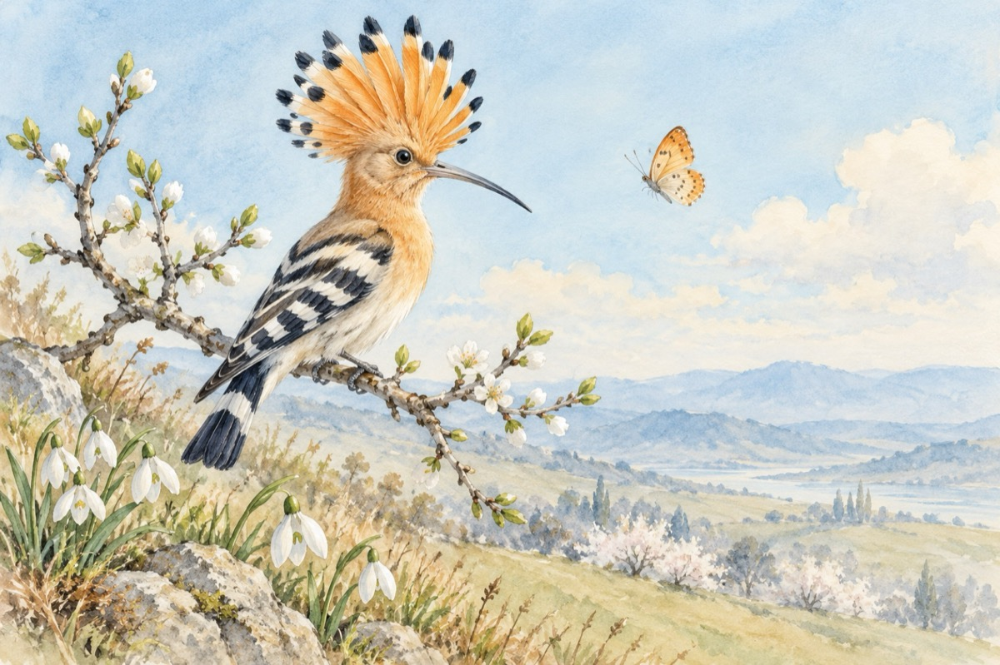

Mija
Mijește primăvara pe colină
La copaci țâșnește viața de sub scoarță
Ghioceii scos-au capul la lumină
Și mieii pe câmpie să zburde-nvață!
Un fluturaș încearcă zborul,
Albinele în crâng au dat năvală
Strângând cu grijă de pe flori nectarul
E semn că a venit frumoasa primăvară!
Cucul sosi-ta în zăvoi și iată
Fiind de oameni numărat
Și mai ales de-ți cântă-n față
Câți ani de viață prin cântec el ți-a dat!?...
Și ca o frumusețe a naturii cântă ea,
De toate-n jur pulsează
Ca o regină-ncoronată pupăza
La hărnicie te îndeamnă dis-de-dimineață!
Aceasta-i primăvara frumoasă ce-a sosit
De-aceea-i se cuvine o urare:
Primăvară, bine ai venit!
Vasile Groza
Apare și în: Privește-mă în ochi (2017).